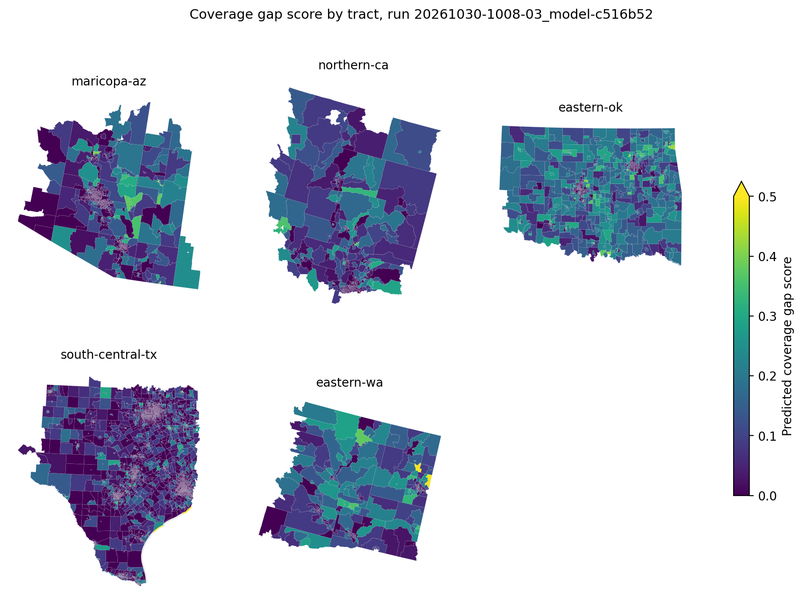

The challenge asks for a coverage gap score per Census tract that compares Overture Maps release 2026-08-19.0 with reference data for roads, buildings and points of interest across 9,794 tracts in five hazard regions of the western and southern United States. No labels are provided, so every submission is an estimate of a deterministic formula applied to reference layers that the organisers removed from the challenge bucket on 25 September 2026. Over sixteen submissions an estimation approach built only from the challenge package brought the public RMSE from 0.1072 for the all-zero file to 0.0745. After Zindi staff confirmed on 27 October that the public versions of those layers could be used, the pipeline rebuilt the reference side of each component from those sources and reached 0.02996 (submission S19), 0.02380 (S24) once ZIP establishment counts were apportioned to tracts by HUD business-address ratios, and 0.02152 (S25) once the building reference was rebuilt from Microsoft's Global ML footprints. The rebuilt transport component reproduces the organisers' published undefined rates to within one percentage point in all four documented regions, and their published spread of road length ratios (0.71 to 1.59) once road length on shared tract boundaries is counted once. The submissions that tested alternative building, EMS, school and establishment references show where the remaining error sits. For the Best Bias Discovery track, this paper reports that on federally recognised reservations the share of local street length with no name in Overture is 9.5 percentage points higher than on non-tribal tracts of the same region and rurality (95% county bootstrap interval 3.5 to 14.7), rising to 27.6 points on the Osage Reservation, while highways there are named at the same rate as elsewhere. The scorecard cannot see this because it measures length and counts. Emergency dispatch and evacuation messaging depend on the names.

@techreport{ouma2026coverage,
title = {Rebuilding the Coverage Gap Score from Public Reference
Data, and Unnamed Local Roads on Tribal Reservations:
Methodology for the Bias Bounty Mapping Equity Challenge},
author = {Ouma, Craig Carlos},
year = {2026},
month = {October},
institution = {Independent Researcher},
note = {Zindi Bias Bounty Mapping Equity Challenge},
url = {https://craigouma.github.io/bias-bounty-mapping-equity-challenge/methodology/}
}